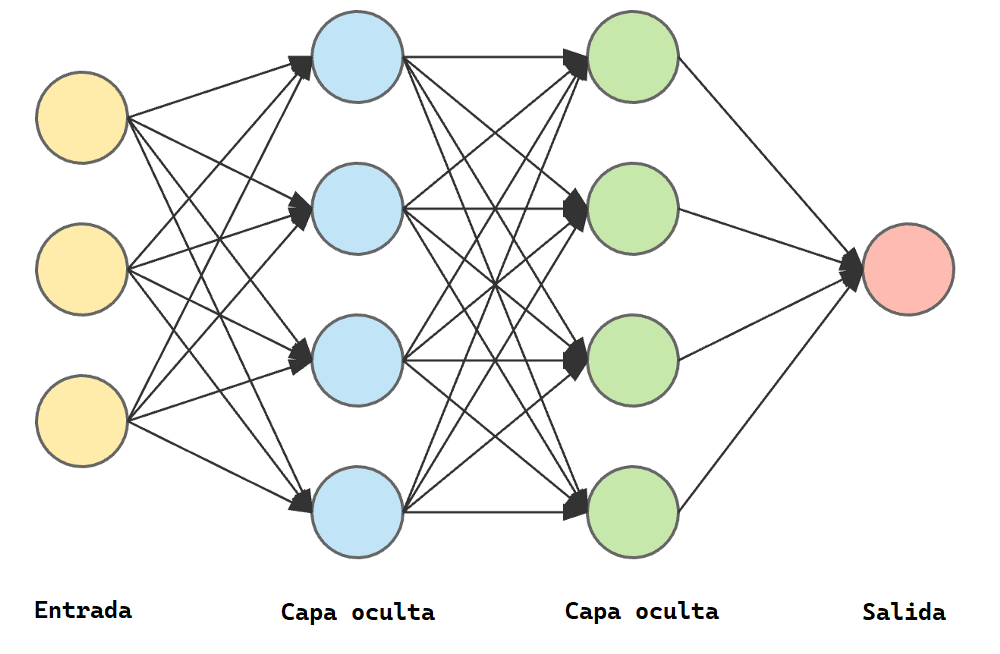

Aplicaciones de arquitecturas paralelas
Las arquitecturas paralelas han revolucionado múltiples industrias al permitir procesar grandes volúmenes de datos con mayor velocidad y eficiencia. A continuación se presentan algunos casos relevantes:
Supercomputadoras
Equipos como los desarrollados por IBM (Summit) o Fujitsu (Fugaku) emplean miles de núcleos en configuraciones MIMD con memoria distribuida. Su poder de cómputo permite simular cambios climáticos, modelar moléculas y realizar análisis genómicos.
Centros de datos y servicios en la nube
Plataformas como Amazon Web Services, Google Cloud o Microsoft Azure se apoyan en arquitecturas distribuidas con miles de servidores interconectados. Cada servidor ejecuta tareas paralelas, permitiendo escalabilidad, redundancia y alto rendimiento.

Renderizado de gráficos y animación
En estudios de animación como Pixar o videojuegos como los de Epic Games, las GPUs realizan cálculos paralelos para renderizar imágenes en tiempo real. Estas operaciones aprovechan arquitecturas SIMD altamente optimizadas.
Inteligencia Artificial y Machine Learning
Los algoritmos de aprendizaje profundo requieren miles de operaciones simultáneas. Para ello, se emplean clusters con GPUs y TPUs que permiten el entrenamiento y evaluación eficiente de modelos complejos.
